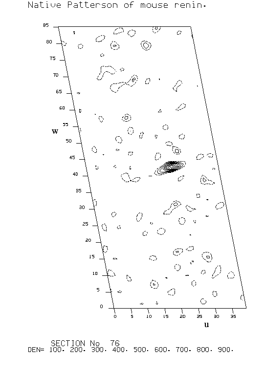

|
CCP4i: Graphical User Interface |
| MR Tutorial Bath - Renin case study |
 |
BACK TO INDEX |  |
Convert the reflection data file into the internal format used by the AMORE program.
# amore HKLIN mrenin HKLPCK0 mrenin.hkl <<EOD TITLE ** packing h k l F for mouse renin crystal ** SORT LABIN FP=FPmrenin SIGFP=SPmrenin EOD
Compute a molecular Fourier transform for use in structure factor calculation by interpolation.
# amore XYZIN1 hexpep XYZOUT1 hexpep_model table1 hexpep.tab <<EOD TITLE Produce table for hexagonal pepsin model. TABFUN NOROTA ! No rotate for comparison. CRYST CELL 78.34 117.76 85.88 90 101.18 90 MODEL 1 SAMPLE 1 RESO 2.8 ! Beyond native resolution for interpolation. EOD
Compute structure factor amplitudes for the search model in space group P1 in a large rectangular cell.
Compute spherical harmonic coefficients for the target and model Pattersons.
Compute the cross-RF.
#
amore HKLPCK0 mrenin.hkl table1 hexpep.tab HKLPCK1 hexpep.hkl \
CLMN0 mrenin.clmn CLMN1 hexpep.clmn MAPOUT mrenin_rotfun <<EOD
ROTFUN
TITLE Generate HKLPCK1 from pepsin model.
GENER 1 RESO 20 3 CELL 80 84 97
CLMN CRYST RESO 20 3 SHARP -20 SPHERE 35
CLMN MODEL 1 RESO 20 3 SHARP -20 SPHERE 35
ROTATE CROSS MODEL 1 BMAX 90 NPIC 20 ! Beta = 0-90.
EOD
\rm mrenin_rotfun.map
Note that here the Rotation function uses the default orthogonalisation convention (ORTH 1, with x || a and z || c*; this is also the standard PDB convention). Normally for monoclinic space groups the alternative convention (ORTH 3, with x || c and z || b*) would be used as it takes advantage of the 2-fold symmetry about the b axis. However in the current version (3.1) of Amore, there is a bug in the translation function which gives incorrect results with ORTH 3.
| a | b | g | S | |||||||
|---|---|---|---|---|---|---|---|---|---|---|
| SOLUTIONRC | 1 | 74.87 | 76.93 | 346.67 | 0.0000 | 0.0000 | 0.0000 | 8.7 | 0.0 | 1 |
| SOLUTIONRC | 1 | 68.82 | 76.47 | 346.99 | 0.0000 | 0.0000 | 0.0000 | 8.0 | 0.0 | 2 |
| SOLUTIONRC | 1 | 246.92 | 85.32 | 8.87 | 0.0000 | 0.0000 | 0.0000 | 6.0 | 0.0 | 3 |
| SOLUTIONRC | 1 | 244.00 | 86.00 | 8.50 | 0.0000 | 0.0000 | 0.0000 | 5.9 | 0.0 | 4 |
| SOLUTIONRC | 1 | 329.77 | 62.61 | 22.31 | 0.0000 | 0.0000 | 0.0000 | 5.2 | 0.0 | 5 |
| SOLUTIONRC | 1 | 155.01 | 67.65 | 314.16 | 0.0000 | 0.0000 | 0.0000 | 5.0 | 0.0 | 6 |
| SOLUTIONRC | 1 | 298.57 | 90.00 | 194.00 | 0.0000 | 0.0000 | 0.0000 | 4.9 | 0.0 | 7 |
| SOLUTIONRC | 1 | 348.33 | 76.05 | 198.50 | 0.0000 | 0.0000 | 0.0000 | 4.8 | 0.0 | 8 |
The table below shows values of DS/s for 2 peaks (the other 2 are related by the crystallographic 2-fold).
| Resolution limits = 20-3Å | Resolution limits = 8-3Å | |||
|---|---|---|---|---|
| Radius/Š| B = -20Ų | B = 0 | ||
| 15 | 0.79 | -0.54 | 0.95 | -0.22 |
| 20 | 2.07 | 0.37 | 2.39 | 0.81 |
| 25 | 1.92 | 0.28 | 2.44 | 1.14 |
| 30 | 2.59 | 0.58 | 2.73 | 1.27 |
| 35 | 3.14 | 0.63 | 3.08 | 0.79 |
| 40 | 2.90 | 0.43 | 3.24 | 1.05 |
Modify the PDB header in the coordinate file.
# pdbset XYZIN hexpep XYZOUT hexpep_rfcell <<EOD SPACEG P1 CELL 80 84 97 EOD
Compute structure factor amplitudes in space group P1 for the search model in a large rectangular cell.
# # Structure factors for hexagonal pepsin model in RF cell. # sfall XYZIN hexpep_rfcell HKLOUT hexpep_rfcell <<EOD MODE SFCALC XYZIN SFSG 1 SYMM 1 RESO 20 3 LABOUT PHIC=PC EOD
Normalise the observed and calculated amplitudes.
# ecalc HKLIN mrenin HKLOUT mrenin_ecalc <<EOD TITLE ** Ecalc for mouse renin crystal** LABIN FP=FPmrenin SIGFP=SPmrenin EOD # Calc E's for hexagonal pepsin model. # ecalc HKLIN hexpep_rfcell HKLOUT hexpep_ecalc <<EOD TITLE ** Ecalc for hexagonal pepsin model** LABIN FP=FC EOD
Convert the normalised observed and calculated reflection data files into the internal format used by the AMORE program.
# amore HKLIN mrenin_ecalc HKLPCK0 mrenin_ecalc.hkl <<EOD TITLE ** packing h k l E for mouse renin crystal ** SORT LABIN FP=E SIGFP=E EOD amore HKLIN hexpep_ecalc HKLPCK0 hexpep_ecalc.hkl <<EOD TITLE ** packing h k l E for hexagonal pepsin model ** SORT LABIN FP=E SIGFP=E EOD
Compute spherical harmonic coefficients for the target and model Pattersons.
Compute the cross-RF.
#
amore HKLPCK0 mrenin_ecalc.hkl HKLPCK1 hexpep_ecalc.hkl \
CLMN0 mrenin_ecalc.clmn CLMN1 hexpep_ecalc.clmn \
MAPOUT mrenin_ecalc_rotfun <<EOD
ROTFUN
TITLE Rotation function with E's.
CLMN CRYST ORTH 3 RESO 20 3 SPHERE 35 ! ORTH code 3.
CLMN MODEL 1 RESO 20 3 SPHERE 35
ROTATE CROSS MODEL 1 NPIC 20 ! Beta = 0-180.
EOD
| a | b | g | S | ||||||
|---|---|---|---|---|---|---|---|---|---|
| SOLUTIONRC | 1 | 61.50 | 20.45 | 113.50 | 0.00000 | 0.00000 | 0.00000 | 9.9 | 0.0 |
| SOLUTIONRC | 1 | 67.98 | 26.00 | 107.67 | 0.00000 | 0.00000 | 0.00000 | 8.3 | 0.0 |
| SOLUTIONRC | 1 | 111.50 | 156.50 | 286.50 | 0.00000 | 0.00000 | 0.00000 | 6.0 | 0.0 |
| SOLUTIONRC | 1 | 116.00 | 157.39 | 293.50 | 0.00000 | 0.00000 | 0.00000 | 5.7 | 0.0 |
| SOLUTIONRC | 1 | 103.13 | 88.06 | 166.43 | 0.00000 | 0.00000 | 0.00000 | 5.1 | 0.0 |
| SOLUTIONRC | 1 | 67.02 | 105.44 | 97.32 | 0.00000 | 0.00000 | 0.00000 | 5.0 | 0.0 |
| SOLUTIONRC | 1 | 70.09 | 116.84 | 97.53 | 0.00000 | 0.00000 | 0.00000 | 5.0 | 0.0 |
| SOLUTIONRC | 1 | 114.90 | 8.17 | 100.72 | 0.00000 | 0.00000 | 0.00000 | 4.9 | 0.0 |
Note that the Eulerian angles of the peaks obtained here are different from those obtained previously (see section 4.1.5.); this is because of the different orthogonalisation convention (ORTH 3) used.
Signal (correct-background) and signal/noise are shown for 2 molecules (A and C). The other 2 molecules (B and D) give resolved peaks only for radii >= 35Å.
| Radius/Å | s | DS (A) | DS/s (A) | DS (C) | DS/s (C) |
|---|---|---|---|---|---|
| 15 | 3.3 | 1.7 | 0.5 | -5.0 | -1.5 |
| 20 | 2.2 | 5.7 | 2.5 | 0.1 | 0.0 |
| 25 | 1.7 | 4.6 | 2.8 | 2.5 | 0.5 |
| 30 | 1.3 | 4.4 | 3.4 | 1.3 | 1.0 |
| 35 | 1.1 | 4.5 | 4.1 | 0.6 | 0.6 |
| 40 | 0.9 | 3.6 | 4.1 | 0.7 | 0.8 |
In the case of NCS, using E's compute and plot the self-Rotation function in terms of spherical polar angles. Then compute again in terms of Euler angles, and check for consistency with the cross-RF. The self-Rotation function computed in terms of Euler angles is more accurate, but that computed in terms of spherical polars is better for visualisation.
Note that the alternate orthogonalisation code (ORTH 3) for monoclinic space groups is used here. This gives a more easily interpretable self-Rotation function map, because the crystallographic 2-fold axis along b is then at w = 0° (see section 2.9.), with c at (w,f) = (90°,0°) and a* at (w,f) = (90°,90°).
#
polarrfn HKLIN mrenin_ecalc MAPOUT polarrfn PLOT polarrfn <<EOD
TITLE Self Rotation function (spherical polars) of Mouse Renin with E's, R=35
SELF 35
RESO 20 3
CRYST FILE 1 ORTH 3 SYMM P21
LABIN FILE 1 F=E SIGF=E
LIMITS 0 180 5 0 180 5 0 180 5 ! Same for all self-RF's.
MAP
NOPRIN
PLOT 10 5
FIND 2 20 RMS
EOD
if ($status) exit
pltdev -i polarrfn.plo -sta 37
#
amore HKLPCK0 mrenin_ecalc.hkl CLMN0 mrenin_ecalc.clmn -
MAPOUT mrenin_self <<EOD
ROTFUN
TITLE Self Rotation function (Euler angles) of Mouse Renin with E's, R=35
ROTATE SELF NPIC 20
EOD
if ($status) exit
grep SOLUTIONRC mrenin_ecalc_rotfun.log >! mrenin_ecalc_rotfun.pkl
if ($status) exit
rfcorr MAPIN mrenin_self PEAKS mrenin_ecalc_rotfun.pkl <<EOD
TITLE Mouse renin self/cross rotation function correlation.
SPACEG P2
ORTH 3
CHI 180
EOD
| In the mouse renin case, the native Patterson demonstrates the existence of a NCS 2-fold parallel to the 21 axis: |
|  |
| Peak | Alpha | Beta | Gamma |
|---|---|---|---|
| 1 | 61.50 | 20.45 | 113.50 |
| 2 | 67.98 | 26.00 | 107.67 |
| 3 | 111.50 | 156.50 | 286.50 |
| 4 | 116.00 | 157.39 | 293.50 |
| 5 | 103.13 | 88.06 | 166.43 |
| 6 | 67.02 | 105.44 | 97.32 |
| 7 | 70.09 | 116.84 | 97.53 |
| 8 | 114.90 | 8.17 | 100.72 |
| Serial | #Peak | #Peak(#Symm) | Theta | Phi | Chi | self-RF |
|---|---|---|---|---|---|---|
| 1 | 3 | 4 ( 2) | 2 | 81 | 179 | 78.75 |
| 2 | 1 | 2 ( 2) | 3 | 87 | 179 | 51.59 |
| 3 | 2 | 3 ( 2) | 90 | 180 | 179 | 39.46 |
| 4 | 2 | 3 ( 1) | 90 | 90 | 180 | 39.46 |
| 5 | 1 | 3 ( 2) | 90 | 179 | 174 | 37.41 |
| 6 | 1 | 3 ( 1) | 87 | 89 | 179 | 37.41 |
| 7 | 1 | 4 ( 1) | 89 | 89 | 179 | 32.41 |
| 8 | 1 | 4 ( 2) | 89 | 179 | 178 | 32.41 |
| 9 | 2 | 4 ( 2) | 90 | 179 | 176 | 25.68 |
| 10 | 2 | 4 ( 1) | 88 | 89 | 179 | 25.68 |
| Inter-vector angles: | ||||||||
|---|---|---|---|---|---|---|---|---|
| Serial[i] | Serial[j] (Symm[j]) |
Angle | Serial[i] | Serial[j] (Symm[j]) |
Angle | Serial[i] | Serial[j] (Symm[j]) |
Angle |
| 1 | 2( 1) | 2 | 1 | 2( 2) | 5 | 1 | 3( 1) | 90 |
| 1 | 3( 2) | 90 | 1 | 4( 1) | 88 | 1 | 4( 2) | 89 |
| 1 | 5( 1) | 90 | 1 | 5( 2) | 89 | 1 | 6( 1) | 89 |
| 1 | 6( 2) | 86 | 1 | 7( 1) | 89 | 1 | 7( 2) | 87 |
| 1 | 8( 1) | 90 | 1 | 8( 2) | 89 | 1 | 9( 1) | 90 |
| 1 | 9( 2) | 89 | 1 | 10( 1) | 86 | 1 | 10( 2) | 90 |
| 2 | 3( 1) | 90 | 2 | 3( 2) | 90 | 2 | 4( 1) | 86 |
| 2 | 4( 2) | 87 | 2 | 5( 1) | 90 | 2 | 5( 2) | 90 |
| 2 | 6( 1) | 90 | 2 | 6( 2) | 84 | 2 | 7( 1) | 88 |
| 2 | 7( 2) | 86 | 2 | 8( 1) | 90 | 2 | 8( 2) | 89 |
| 2 | 9( 1) | 90 | 2 | 9( 2) | 89 | 2 | 10( 1) | 85 |
| 2 | 10( 2) | 89 | 3 | 4( 1) | 90 | 3 | 4( 2) | 90 |
| 3 | 5( 1) | 1 | 3 | 5( 2) | 1 | 3 | 6( 1) | 89 |
| 3 | 6( 2) | 89 | 3 | 7( 1) | 89 | 3 | 7( 2) | 89 |
| 3 | 8( 1) | 1 | 3 | 8( 2) | 1 | 3 | 9( 1) | 0 |
| 3 | 9( 2) | 1 | 3 | 10( 1) | 90 | 3 | 10( 2) | 90 |
| 4 | 5( 1) | 89 | 4 | 5( 2) | 89 | 4 | 6( 1) | 3 |
| 4 | 6( 2) | 2 | 4 | 7( 1) | 2 | 4 | 7( 2) | 1 |
| 4 | 8( 1) | 89 | 4 | 8( 2) | 89 | 4 | 9( 1) | 90 |
| 4 | 9( 2) | 90 | 4 | 10( 1) | 2 | 4 | 10( 2) | 3 |
| 5 | 6( 1) | 90 | 5 | 6( 2) | 90 | 5 | 7( 1) | 90 |
| 5 | 7( 2) | 90 | 5 | 8( 1) | 0 | 5 | 8( 2) | 1 |
| 5 | 9( 1) | 0 | 5 | 9( 2) | 1 | 5 | 10( 1) | 90 |
| 5 | 10( 2) | 90 | 6 | 7( 1) | 2 | 6 | 7( 2) | 4 |
| 6 | 8( 1) | 90 | 6 | 8( 2) | 90 | 6 | 9( 1) | 90 |
| 6 | 9( 2) | 90 | 6 | 10( 1) | 5 | 6 | 10( 2) | 1 |
| 7 | 8( 1) | 90 | 7 | 8( 2) | 90 | 7 | 9( 1) | 89 |
| 7 | 9( 2) | 89 | 7 | 10( 1) | 3 | 7 | 10( 2) | 1 |
| 8 | 9( 1) | 1 | 8 | 9( 2) | 1 | 8 | 10( 1) | 89 |
| 8 | 10( 2) | 89 | 9 | 10( 1) | 90 | 9 | 10( 2) | 90 |
For the best RF solutions, compute the TF.
#
amore HKLPCK0 mrenin.hkl table1 hexpep.tab MAPOUT mrenin_trafun \
TRAING_NR 30000 <<EOD
TRAFUN CB RESO 20 3.5 PKLIM .25 NPIC 50
TITLE Translation function
CRYST SHARP -10
SOLUTIONRC 1 74.87 76.93 346.67 0.0000 0.0000 0.0000 9.4 0.0 1
SOLUTIONRC 1 111.18 103.53 166.99 0.0000 0.0000 0.0000 8.0 0.0 2
SOLUTIONRC 1 246.92 85.32 8.87 0.0000 0.0000 0.0000 6.0 0.0 3
SOLUTIONRC 1 296.00 94.00 188.50 0.0000 0.0000 0.0000 5.9 0.0 4
EOD
\rm mrenin_trafun.map
Note that a 2-fold crystallographic symmetry operator about the b axis (orthogonal y axis) has been applied to the Eulerian angles for molecules B and D (compare with the output from the Rotation function in section 4.1.5.). Although this is not essential, it is nevertheless convenient because it ensures that the set of protomer orientations chosen obeys the non-crystallographic 222 symmetry of the tetramer.
| SOLUT_1 | 1 | 74.87 | 76.93 | 346.67 | 0.4167 | 0.0000 | 0.4904 | 11.1 | 57.6 | 1 |
| SOLUT_1 | 1 | 74.87 | 76.93 | 346.67 | 0.3333 | 0.0000 | 0.2981 | 10.3 | 57.8 | 4 |
| SOLUT_1 | 1 | 74.87 | 76.93 | 346.67 | 0.0938 | 0.0000 | 0.4904 | 9.8 | 57.9 | 6 |
| SOLUT_2 | 1 | 111.18 | 103.53 | 166.99 | 0.3958 | 0.0000 | 0.0096 | 10.5 | 57.8 | 1 |
| SOLUT_2 | 1 | 111.18 | 103.53 | 166.99 | 0.0104 | 0.0000 | 0.3462 | 9.3 | 58.4 | 6 |
| SOLUT_2 | 1 | 111.18 | 103.53 | 166.99 | 0.4896 | 0.0000 | 0.1923 | 9.3 | 58.1 | 5 |
| SOLUT_3 | 1 | 246.92 | 85.32 | 8.87 | 0.0729 | 0.0000 | 0.0673 | 9.0 | 58.2 | 2 |
| SOLUT_3 | 1 | 246.92 | 85.32 | 8.87 | 0.4062 | 0.0000 | 0.0673 | 9.0 | 58.2 | 1 |
| SOLUT_3 | 1 | 246.92 | 85.32 | 8.87 | 0.3125 | 0.0000 | 0.1827 | 8.5 | 58.4 | 6 |
| SOLUT_4 | 1 | 296.00 | 94.00 | 188.50 | 0.4271 | 0.0000 | 0.4327 | 9.4 | 58.0 | 2 |
| SOLUT_4 | 1 | 296.00 | 94.00 | 188.50 | 0.1875 | 0.0000 | 0.2404 | 8.7 | 58.5 | 4 |
| SOLUT_4 | 1 | 296.00 | 94.00 | 188.50 | 0.1875 | 0.0000 | 0.3077 | 8.7 | 58.2 | 6 |
| Correlation coefficient | ||
|---|---|---|
| Molecule | Correct | Background |
| A | 0.111 | 0.103 |
| B | 0.105 | 0.093 |
| C | 0.090 | 0.085 |
| D | 0.094 | 0.087 |
Fix the first molecule, compute the TF for the second; repeat for rest.
#
amore HKLPCK0 mrenin.hkl table1 hexpep.tab MAPOUT mrenin_trafun \
TRAING_NR 30000 <<EOD
TRAFUN CB NMOL 2 RESO 20 3.5 PKLIM .25 NPIC 50
TITLE Translation function. Fix A; find B.
CRYST SHARP -10
SOLUT_1 FIX 1 74.87 76.93 346.67 0.4167 0.0000 0.4904 11.1 57.6 1
SOLUTIONRC 1 111.18 103.53 166.99 0.0000 0.0000 0.0000 8.0 0.0 2
EOD
\rm mrenin_trafun.map
#
amore HKLPCK0 mrenin.hkl table1 hexpep.tab MAPOUT mrenin_trafun \
TRAING_NR 30000 <<EOD
TRAFUN CB NMOL 3 RESO 20 3.5 PKLIM .25 NPIC 50
TITLE Translation function. Fix A and B; find D.
CRYST SHARP -10
SOLUT_1 FIX 1 74.87 76.93 346.67 0.4167 0.0000 0.4904 11.1 57.6 1
SOLUT_2 FIX 1 111.18 103.53 166.99 0.8984 0.0213 0.0080 18.8 56.0 1
SOLUTIONRC 1 296.00 94.00 188.50 0.0000 0.0000 0.0000 5.9 0.0 4
EOD
\rm mrenin_trafun.map
#
amore HKLPCK0 mrenin.hkl table1 hexpep.tab MAPOUT mrenin_trafun \
TRAING_NR 30000 <<EOD
TRAFUN CB NMOL 4 RESO 20 3.5 PKLIM .25 NPIC 50
TITLE Translation function. Fix A, B and D; find C.
CRYST SHARP -10
SOLUT_1 FIX 1 74.87 76.93 346.67 0.4167 0.0000 0.4904 11.1 57.6 1
SOLUT_2 FIX 1 111.18 103.53 166.99 0.8984 0.0213 0.0080 18.8 56.0 1
SOLUT_3 FIX 1 296.00 94.00 188.50 0.4227 0.9769 0.9295 22.5 54.8 1
SOLUTIONRC 1 246.92 85.32 8.87 0.0000 0.0000 0.0000 6.0 0.0 3
EOD
\rm mrenin_trafun.map
For the best TF solution(s), do rigid-body refinements and choose the solution with the highest correlation coefficient.
# amore HKLPCK0 mrenin.hkl table1 hexpep.tab FITING_NR 50000 <<EOD FITFUN NMOL 4 RESO 20 3 TITLE Rigid body refinement. REFSOL AL BE GA X Y Z BF SOLUT_1 1 74.87 76.93 346.67 0.4167 0.0000 0.4904 11.1 57.6 1 SOLUT_2 1 111.18 103.53 166.99 0.8984 0.0213 0.0080 18.8 56.0 1 SOLUT_4 1 246.92 85.32 8.87 0.9038 0.0018 0.5704 27.4 54.3 1 SOLUT_3 1 296.00 94.00 188.50 0.4227 0.9769 0.9295 22.5 54.8 1 EOD
Scale, B-Fact, Correlation Coefficient, R-Fact
0.20040E+01 26.834 48.589 50.694
0.19908E+01 26.757 49.640 50.165
0.19851E+01 26.844 50.399 49.725
0.19806E+01 26.854 50.837 49.442
FINAL POSITIONS
SOLUTIONF 1 76.40 78.04 346.60 0.4206 -0.0007 0.4868 50.8 49.4 1
SOLUTIONF 1 113.07 102.95 167.52 0.8980 0.0245 0.0083 50.8 49.4 2
SOLUTIONF 1 250.63 85.32 8.82 0.9019 0.0022 0.5695 50.8 49.4 4
SOLUTIONF 1 297.49 93.18 188.39 0.4229 0.9768 0.9281 50.8 49.4 3
Apply the optimised rotation matrix and translation vector to the model coordinates output by AMORE / TABFUN.
# pdbset XYZIN hexpep_model XYZOUT mrenin_mola <<EOD SPACEG P21 CHAIN A ROTATE EULER 76.40 78.04 346.60 SHIFT FRACT 0.4206 -0.0007 0.4868 EOD pdbset XYZIN hexpep_model XYZOUT mrenin_molb <<EOD SPACEG P21 CHAIN B ROTATE EULER 113.07 102.95 167.52 SHIFT FRACT 0.8980 0.0245 0.0083 EOD pdbset XYZIN hexpep_model XYZOUT mrenin_molc <<EOD SPACEG P21 CHAIN C ROTATE EULER 250.63 85.32 8.82 SHIFT FRACT 0.9019 0.0022 0.5695 EOD pdbset XYZIN hexpep_model XYZOUT mrenin_mold <<EOD SPACEG P21 CHAIN D ROTATE EULER 297.49 93.18 188.39 SHIFT FRACT 0.4229 0.9768 0.9281 EOD
For each molecule in the asymmetric unit apply the appropriate rotation matrix, calculated from the Eulerian angles of the peak(s) in the RF, to the model coordinates. Also modify the PDB header in the coordinate file.
# pdbset XYZIN hexpep XYZOUT hexpep_mola <<EOD CELL 78.34 117.76 85.88 90 101.18 90 SPACEG P1 ORTHOG 3 ROTATE EULER 61.50 20.45 113.50 EOD pdbset XYZIN hexpep XYZOUT hexpep_molb <<EOD CELL 78.34 117.76 85.88 90 101.18 90 SPACEG P1 ORTHOG 3 ROTATE EULER 247.98 26.00 107.67 EOD pdbset XYZIN hexpep XYZOUT hexpep_molc <<EOD CELL 78.34 117.76 85.88 90 101.18 90 SPACEG P1 ORTHOG 3 ROTATE EULER 111.50 156.50 286.50 EOD pdbset XYZIN hexpep XYZOUT hexpep_mold <<EOD CELL 78.34 117.76 85.88 90 101.18 90 SPACEG P1 ORTHOG 3 ROTATE EULER 296.00 157.39 293.50 EOD
Again, note that a 2-fold crystallographic symmetry operator about the b axis (orthogonal z axis) has been applied to the Eulerian angles for molecules B and D (compare with the output from the Rotation function in section 4.2.6.), in order to ensure that the set of protomer orientations chosen obeys the non-crystallographic 222 symmetry of the tetramer.
Calculate structure factor amplitudes and phases for each molecule in the asymmetric unit.
# # Structure factors for hexagonal pepsin models in TF cell. # sfall XYZIN hexpep_mola HKLOUT hexpep_mola <<EOD MODE SFCALC XYZIN SFSG 1 SYMM 1 RESO 20 3 LABOUT PHIC=PC EOD sfall XYZIN hexpep_molb HKLOUT hexpep_molb <<EOD MODE SFCALC XYZIN SFSG 1 SYMM 1 RESO 20 3 LABOUT PHIC=PC EOD sfall XYZIN hexpep_molc HKLOUT hexpep_molc <<EOD MODE SFCALC XYZIN SFSG 1 SYMM 1 RESO 20 3 LABOUT PHIC=PC EOD sfall XYZIN hexpep_mold HKLOUT hexpep_mold <<EOD MODE SFCALC XYZIN SFSG 1 SYMM 1 RESO 20 3 LABOUT PHIC=PC EOD
Combine all the columns for the observed reflection data with those for the calculated molecules into a single file.
#
cad HKLIN1 mrenin HKLIN2 hexpep_mola HKLIN3 hexpep_molb \
HKLIN4 hexpep_molc HKLIN5 hexpep_mold HKLOUT mrenin_cad <<EOD
RESO OVER 20 3
TITLE COMBINING mouse renin and rotated hexpep molecules A, B, C, D.
LABIN FILE 1 E1=FPmrenin E2=SPmrenin
CTYPE FILE 1 E1=F E2=Q
LABIN FILE 2 E1=FC E2=PC
CTYPE FILE 2 E1=U E2=V
LABOUT FILE 2 E1=FCA E2=PCA
LABIN FILE 3 E1=FC E2=PC
CTYPE FILE 3 E1=U E2=V
LABOUT FILE 3 E1=FCB E2=PCB
LABIN FILE 4 E1=FC E2=PC
CTYPE FILE 4 E1=U E2=V
LABOUT FILE 4 E1=FCC E2=PCC
LABIN FILE 5 E1=FC E2=PC
CTYPE FILE 5 E1=U E2=V
LABOUT FILE 5 E1=FCD E2=PCD
END
EOD
Compute the Fourier coefficients for the Translation functions.
# tffc HKLIN mrenin_cad HKLOUT mrenin_mola <<EOD TITLE tffc on mouse renin RESO 20 3 LABIN FP=FPmrenin SIGFP=SPmrenin NONCRY 4 FIND A EOD tffc HKLIN mrenin_cad HKLOUT mrenin_molb <<EOD TITLE tffc on mouse renin RESO 20 3 LABIN FP=FPmrenin SIGFP=SPmrenin NONCRY 4 FIND B EOD tffc HKLIN mrenin_cad HKLOUT mrenin_molc <<EOD TITLE tffc on mouse renin RESO 20 3 LABIN FP=FPmrenin SIGFP=SPmrenin NONCRY 4 FIND C EOD tffc HKLIN mrenin_cad HKLOUT mrenin_mold <<EOD TITLE tffc on mouse renin RESO 20 3 LABIN FP=FPmrenin SIGFP=SPmrenin NONCRY 4 FIND D EOD
Compute the Fourier transforms to get the Translation function maps.
# fft HKLIN mrenin_mola MAPOUT mrenin_mola <<EOD TITLE FFT of tffc map XYZLIM 0 .5 0 0 0 .5 ! Limits for point group 2. GRID 160 240 180 LABIN A=A B=B EOD fft HKLIN mrenin_molb MAPOUT mrenin_molb <<EOD TITLE FFT of tffc map XYZLIM 0 .5 0 0 0 .5 GRID 160 240 180 LABIN A=A B=B EOD fft HKLIN mrenin_molc MAPOUT mrenin_molc <<EOD TITLE FFT of tffc map XYZLIM 0 .5 0 0 0 .5 GRID 160 240 180 LABIN A=A B=B EOD fft HKLIN mrenin_mold MAPOUT mrenin_mold <<EOD TITLE FFT of tffc map XYZLIM 0 .5 0 0 0 .5 GRID 160 240 180 LABIN A=A B=B EOD
Search the Translation function map for peaks; one peak should stand out from the rest with relative signal/noise > 1.
# mapsig MAPIN mrenin_mola PEAK_LIST mrenin_mola.pkl <<EOD EOD \rm mrenin_mola.mtz mrenin_mola.map
| tx | ty | tz | S/s | |||||||
|---|---|---|---|---|---|---|---|---|---|---|
| 1 | 27 | 9 | 15.0 | 0.0 | 31.0 | 0.314 | 0.094 | 0.000 | 0.172 | 6.11 |
| 2 | 10 | 6 | 42.3 | 0.0 | 32.5 | 0.210 | 0.265 | 0.000 | 0.181 | 4.09 |
| 3 | 41 | 9 | 1.4 | 0.0 | 8.8 | 0.178 | 0.009 | 0.000 | 0.049 | 3.47 |
| 4 | 7 | 7 | 57.5 | 0.0 | 29.9 | 0.189 | 0.360 | 0.000 | 0.166 | 3.67 |
# mapsig MAPIN mrenin_molb PEAK_LIST mrenin_molb.pkl <<EOD EOD \rm mrenin_molb.mtz mrenin_molb.map
| 1 | 21 | 9 | 64.1 | 0.0 | 63.4 | 0.346 | 0.400 | 0.000 | 0.352 | 7.04 |
|---|---|---|---|---|---|---|---|---|---|---|
| 2 | 6 | 6 | 50.7 | 0.0 | 69.3 | 0.204 | 0.317 | 0.000 | 0.385 | 4.16 |
| 3 | 7 | 7 | 24.4 | 0.0 | 11.7 | 0.181 | 0.153 | 0.000 | 0.065 | 3.68 |
| 4 | 11 | 7 | 36.5 | 0.0 | 61.8 | 0.161 | 0.228 | 0.000 | 0.343 | 3.29 |
# mapsig MAPIN mrenin_molc PEAK_LIST mrenin_molc.pkl <<EOD EOD \rm mrenin_molc.mtz mrenin_molc.map
| 1 | 30 | 9 | 1.9 | 0.0 | 48.6 | 0.292 | 0.012 | 0.000 | 0.270 | 5.96 |
|---|---|---|---|---|---|---|---|---|---|---|
| 2 | 7 | 7 | 25.2 | 0.0 | 70.1 | 0.169 | 0.157 | 0.000 | 0.390 | 3.45 |
| 3 | 10 | 7 | 78.5 | 0.0 | 7.5 | 0.189 | 0.491 | 0.000 | 0.042 | 3.85 |
| 4 | 11 | 8 | 46.4 | 0.0 | 60.3 | 0.167 | 0.290 | 0.000 | 0.335 | 3.39 |
# mapsig MAPIN mrenin_mold PEAK_LIST mrenin_mold.pkl <<EOD EOD \rm mrenin_mold.mtz mrenin_mold.map
| 1 | 17 | 8 | 46.0 | 0.0 | 32.0 | 0.305 | 0.287 | 0.000 | 0.178 | 6.03 |
|---|---|---|---|---|---|---|---|---|---|---|
| 2 | 11 | 6 | 76.2 | 0.0 | 73.5 | 0.233 | 0.476 | 0.000 | 0.408 | 4.60 |
| 3 | 7 | 7 | 44.9 | 0.0 | 71.1 | 0.197 | 0.281 | 0.000 | 0.395 | 3.90 |
| 4 | 27 | 8 | 73.2 | 0.0 | 32.5 | 0.176 | 0.458 | 0.000 | 0.181 | 3.49 |
In cases of non-crystallographic symmetry it is necessary to place all molecules relative to the same origin with non-crystallographic Translation functions.
# tffc HKLIN mrenin_cad HKLOUT mrenin_molca <<EOD TITLE tffc on mouse renin RESO 20 3 LABIN FP=FPmrenin SIGFP=SPmrenin NONCRY 4 PART VECT C 0.012 0.000 0.270 FIND A EOD if ($status) exit fft HKLIN mrenin_molca MAPOUT mrenin_molca <<EOD TITLE FFT of tffc map XYZLIM 0 1 0 1 0 1 ! Limits for NC-TF in P cell. GRID 160 240 180 LABIN A=A B=B EOD if ($status) exit mapsig MAPIN mrenin_molca PEAK_LIST mrenin_molca.pkl <<EOD EOD \rm mrenin_molca.mtz mrenin_molca.map
| tx | ty | tz | S/s | |||||||
|---|---|---|---|---|---|---|---|---|---|---|
| 1 | 173 | 27 | 15.2 | 109.0 | 31.7 | 1.026 | 0.095 | 0.454 | 0.176 | 9.07 |
| 2 | 41 | 26 | 27.0 | 207.0 | 133.0 | 0.724 | 0.169 | 0.863 | 0.739 | 6.39 |
| 3 | 46 | 26 | 122.0 | 222.0 | 121.0 | 0.683 | 0.762 | 0.925 | 0.672 | 6.03 |
| 4 | 33 | 26 | 68.0 | 196.0 | 156.0 | 0.682 | 0.425 | 0.817 | 0.867 | 6.03 |
# tffc HKLIN mrenin_cad HKLOUT mrenin_molcad <<EOD TITLE tffc on mouse renin RESO 20 3 LABIN FP=FPmrenin SIGFP=SPmrenin NONCRY 4 PART VECT C 0.012 0.000 0.270 VECT A 0.095 0.454 0.176 FIND D EOD if ($status) exit fft HKLIN mrenin_molcad MAPOUT mrenin_molcad <<EOD TITLE FFT of tffc map XYZLIM 0 1 0 1 0 1 GRID 160 240 180 LABIN A=A B=B EOD if ($status) exit mapsig MAPIN mrenin_molcad PEAK_LIST mrenin_molcad.pkl <<EOD EOD \rm mrenin_molcad.mtz mrenin_molcad.map
| 1 | 188 | 27 | 46.1 | 3.9 | 32.4 | 2.339 | 0.288 | 0.016 | 0.180 | 11.56 |
|---|---|---|---|---|---|---|---|---|---|---|
| 2 | 47 | 26 | 153.6 | 123.0 | 121.5 | 1.697 | 0.960 | 0.513 | 0.675 | 8.39 |
| 3 | 151 | 21 | 152.8 | 111.7 | 123.3 | 1.634 | 0.955 | 0.465 | 0.685 | 8.08 |
| 4 | 82 | 27 | 45.5 | 230.2 | 32.2 | 1.507 | 0.285 | 0.959 | 0.179 | 7.45 |
# tffc HKLIN mrenin_cad HKLOUT mrenin_molcadb <<EOD TITLE tffc on mouse renin RESO 20 3 LABIN FP=FPmrenin SIGFP=SPmrenin NONCRY 4 PART VECT C 0.012 0.000 0.270 VECT A 0.095 0.454 0.176 VECT D 0.288 0.016 0.180 EOD if ($status) exit fft HKLIN mrenin_molcadb MAPOUT mrenin_molcadb <<EOD TITLE FFT of tffc map XYZLIM 0 1 0 1 0 1 GRID 160 240 180 LABIN A=A B=B EOD if ($status) exit mapsig MAPIN mrenin_molcadb PEAK_LIST mrenin_molcadb.pkl <<EOD EOD \rm mrenin_molcadb.mtz mrenin_molcadb.map
| tx | ty | tz | S/s | |||||||
|---|---|---|---|---|---|---|---|---|---|---|
| 1 | 116 | 27 | 57.1 | 114.7 | 63.4 | 2.479 | 0.357 | 0.478 | 0.352 | 8.77 |
| 2 | 23 | 21 | 19.0 | 104.0 | 111.0 | 1.447 | 0.119 | 0.433 | 0.617 | 5.12 |
| 3 | 18 | 18 | 18.7 | 111.2 | 5.0 | 1.425 | 0.117 | 0.463 | 0.028 | 5.04 |
| 4 | 16 | 15 | 142.3 | 66.6 | 169.4 | 1.465 | 0.889 | 0.277 | 0.941 | 5.18 |
| Fix | Find | DS/s |
|---|---|---|
| - | A | 2.02 |
| - | B | 0.49 |
| - | C | 2.51 |
| - | D | 1.43 |
| C | A | 2.68 |
| CA | D | 3.17 |
| CAD | B | 3.65 |
Note that the fractional translation vectors obtained here are different from those obtained previously (section 4.3.3.) because the centroid of the model coordinates used had been shiftedto the origin.
Apply these translation vectors to the rotated model coordinates.
# pdbset XYZIN hexpep_mola XYZOUT mrenin_mola <<EOD SPACEG P21 CHAIN A SHIFT FRACT .095 -.546 .176 EOD pdbset XYZIN hexpep_molb XYZOUT mrenin_molb <<EOD SPACEG P21 CHAIN B SHIFT FRACT .357 -.522 .352 EOD pdbset XYZIN hexpep_molc XYZOUT mrenin_molc <<EOD SPACEG P21 CHAIN C SHIFT FRACT .012 1 .27 EOD pdbset XYZIN hexpep_mold XYZOUT mrenin_mold <<EOD SPACEG P21 CHAIN D SHIFT FRACT .288 1.016 .18 EOD
Note that unit cell shifts have been added to some of the fractional translation vectors in order to bring all 4 molecules together into a tetramer.
|
BACK TO INDEX | |
{kind=link}
{kind=link}
{kind=link}
{kind=link}
{kind=link}
{kind=link}
{kind=link}